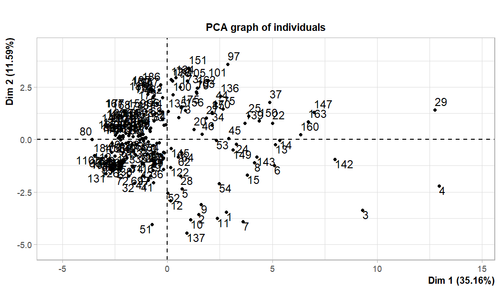
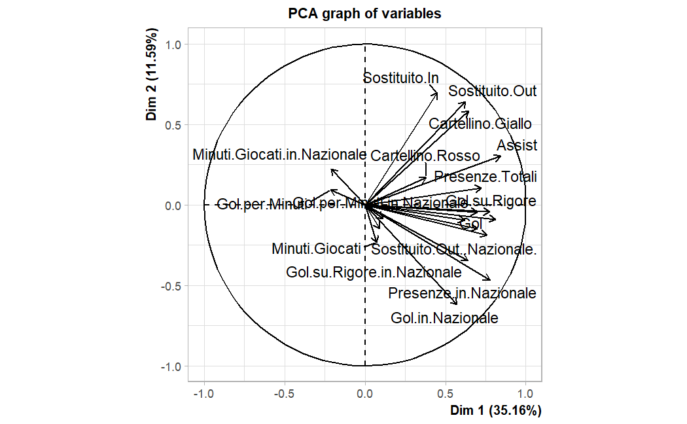
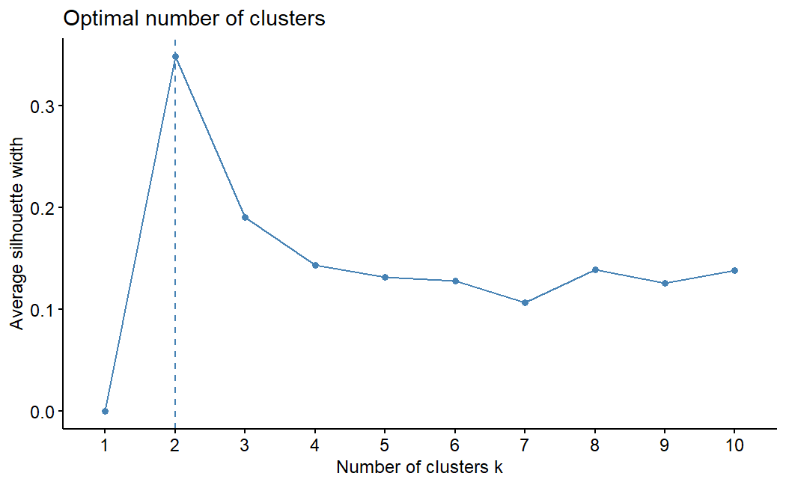
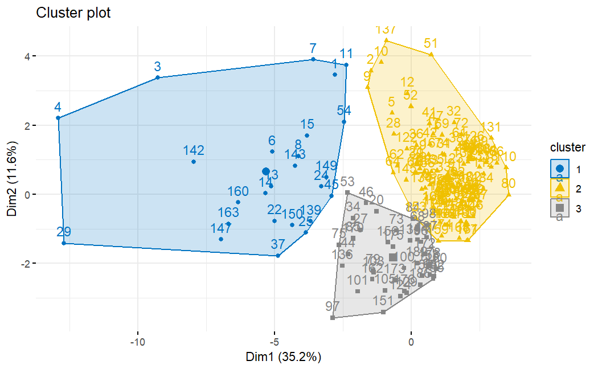

Which Italian forwards outperform their numbers?
A personal project written before Euro 2024. I trained models on the careers of past Italian national-team forwards and used them to see which current players score more for Italy than their profile predicts.
- Type
- Personal project, solo
- Date
- July 2024
- Data
- 187 forwards, 20 variables, Transfermarkt
- Stack
- Python (scraping), R (FactoMineR, factoextra, cluster, rpart, randomForest), LaTeX
Approach
Goals are an imperfect measure of a forward, and the report says so, but they are the one outcome every era of the national team records consistently. The idea: learn the relationship between a forward’s career profile and his goals for Italy from 140 past players, apply it to 47 current ones, and call a player over-performing when he has scored more than the model predicts.
Data
I scraped Italy’s all-time scorers in the forward position from Transfermarkt, chosen because it covers players back to Meazza and Piola. For each player there are 20 numeric variables: appearances, goals, assists, times subbed on and off, cards, penalty goals and minutes, for both club and national team.
Profiling forwards: PCA and clustering
PCA on the standardised variables: the first component explains 35.2% of the variance and the first two 46.8%. Francesco Totti sits far from everyone else on the individuals map.


I then ran k-means (nstart = 25) on the standardised data. The elbow and silhouette diagnostics are below; the silhouette is highest at two clusters, and I kept three to separate more player profiles.


Predicting national-team goals
A regression tree (rpart, ANOVA) and a random forest (100 trees) were trained on the past players and evaluated on the current ones, with predictions rounded to whole goals.
| Model | MAE | MSE | R² |
|---|---|---|---|
| Regression tree | 4.91 | 53.0 | −0.69 |
| Random forest | 3.48 | 23.4 | 0.25 |
The single tree does worse than predicting the average, which is what you expect from one deep tree on 140 noisy careers; averaging many trees fixes most of that.
- Random forest flags Matteo Pessina, Davide Frattesi and Pietro Iemmello as scoring above expectation.
- Regression tree flags Ciro Immobile, Mario Balotelli, Domenico Berardi, Lorenzo Colombo and Stephan El Shaarawy. The disagreement between the two lists is itself a result: the single tree is far more sensitive to noise.
What I would change
- Leakage. Some predictors, national-team minutes and penalty goals in particular, are almost components of the target. A cleaner version would predict national-team goals from club numbers only.
- Units. Transfermarkt writes minutes with a dot as the thousands separator (“3.947’”) and reports minutes per goal rather than goals per minute; both need explicit parsing before modelling.
- Reproducibility. The random forest should be seeded: different runs moved R² between 0.25 and 0.41.
- The current-player list includes attacking midfielders such as Pessina and Frattesi, which Transfermarkt’s scorer list counts as forwards.